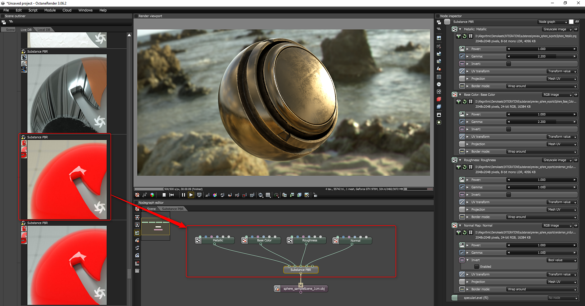

Octane can be used to render Substance outputs using the standalone renderer or through the DCC plugins. Through a Live DB Substance material, Octane Standalone supports Substance outputs based on base color, metallic and roughness.
Octane Standalone
Under Live DB > Materials > Misc find the "Substance PBR" material.
